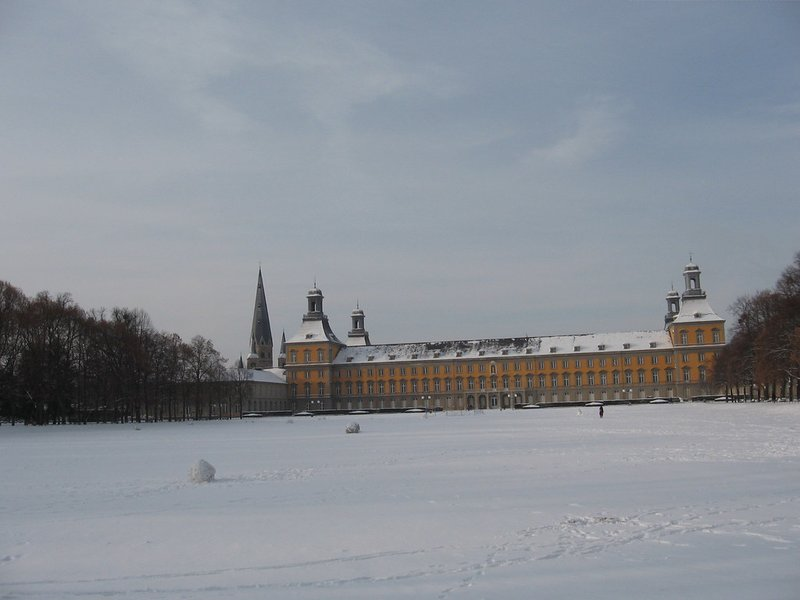
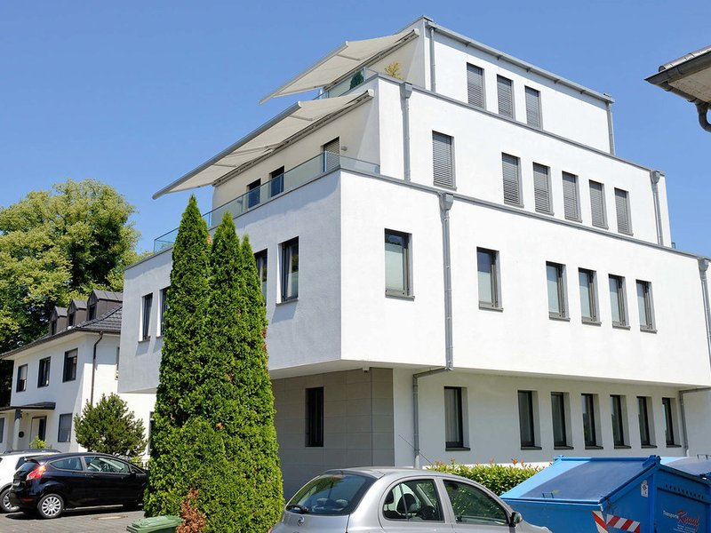
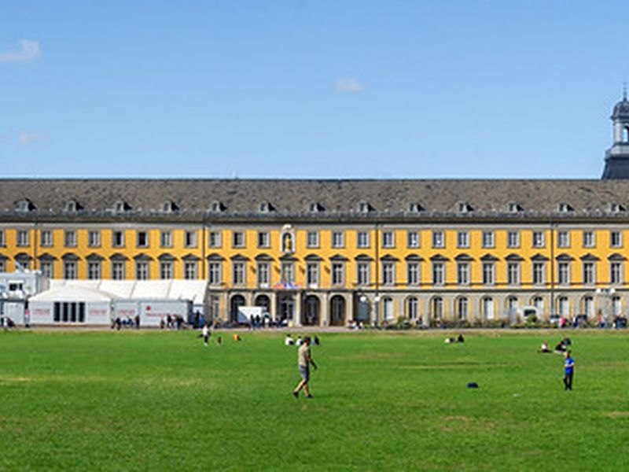
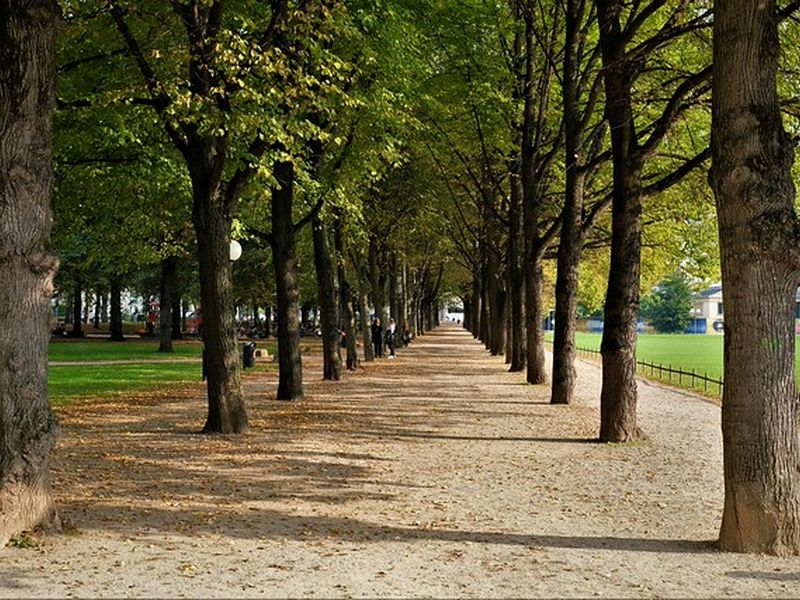
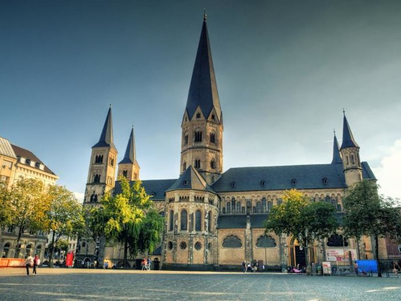
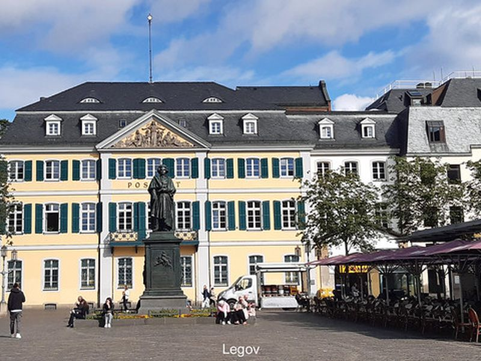
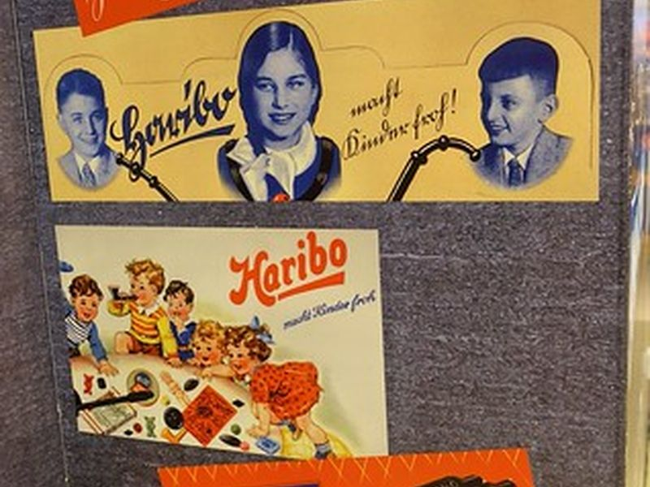
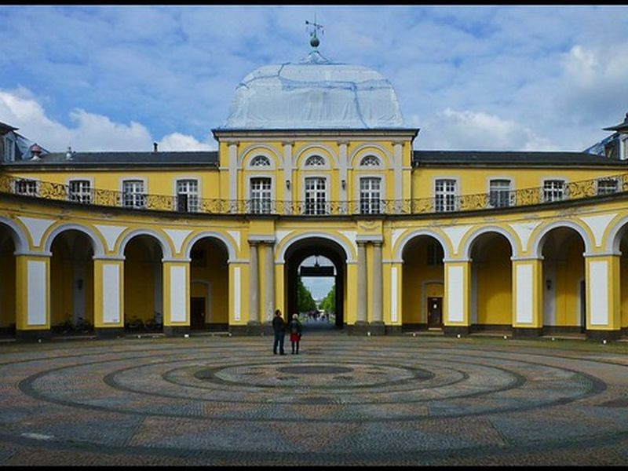

Explore Bonn
A Brief History
Bonn was an electoral residence on the Rhine, the birthplace of Beethoven, and later the capital of West Germany. Churches, civic squares, university buildings, and palace gardens show the city's courtly, academic, and modern political history in a compact urban core.
Attractions Map
Top Sights & Activities
Beethoven-Haus Bonn
The Beethoven-Haus at Bonngasse 20 is the documented birthplace of Ludwig van Beethoven, born here in 1770. The museum displays manuscripts, instruments, and portraits from his early years in Bonn. It connects the electoral residence city with one of the central figures of European classical music.

St. Remigius
St Remigius is a parish church on Brüdergasse near the market, with origins in the 11th century and later Baroque rebuilding. It belonged to the older Catholic street network around Bonn Minster and the electoral court. The church helps frame the small-scale historic core east of the palace.

Altes Rathaus
Bonn's Altes Rathaus faces the market square with a Rococo facade added in the 18th century under Elector Clemens August. State receptions during Bonn's years as West German capital used the building as a ceremonial backdrop. It remains one of the clearest civic monuments of the electoral period.

Kurfürstliches Schloss
The Kurfürstliches Schloss was the main residence of the prince-electors of Cologne from the 18th century and now houses the University of Bonn. Its classical wings and courtyards face the Hofgarten and Rhine beyond. The palace shows how court architecture shaped the city's later academic identity.

Hofgarten Bonn
The Hofgarten is the formal park between the electoral palace and Poppelsdorfer Allee, laid out in the 18th century. Broad lawns, tree-lined paths, and statues provided a setting for court life and later university gatherings. Protest rallies and public events have also used the space in modern political history.

Bonner Münster
Bonn Minster is a Romanesque basilica on Münsterplatz with foundations reaching to the 11th century and one of the Rhineland's oldest churches. Five towers and the crypt of Saints Cassius and Florentius define its profile. The minster anchors the religious history beneath the electoral and federal capital layers.

Beethoven-Denkmal
The Beethoven monument on Münsterplatz was unveiled in 1845 and was one of the earliest large public memorials to a composer in Germany. The bronze figure by Ernst Julius Hähnel stands before a seated allegorical group. It reflects 19th-century civic pride in Bonn's most famous native son.

HARIBO Store
The HARIBO store on Münsterplatz marks the confectionery company founded by Hans Riegel in Bonn in 1920. The shop sells branded sweets and memorabilia in the historic center. It adds a 20th-century commercial chapter to a district otherwise defined by church, court, and university buildings.

Poppelsdorf Palace
Poppelsdorf Palace was built from 1715 as a pleasure residence at the end of the electoral axis from the main palace. Its baroque dome and courtyards now belong to the university, with botanical collections in the adjoining gardens. The building explains the spatial planning ambitions of 18th-century Bonn.
Botanische Gärten der Universität Bonn
The university botanical gardens occupy the grounds around Poppelsdorf Palace and were developed from the 18th century for teaching and plant exchange. Greenhouses, systematic beds, and historic trees support research and public visits. They show how residence landscapes were adapted for science and horticulture.